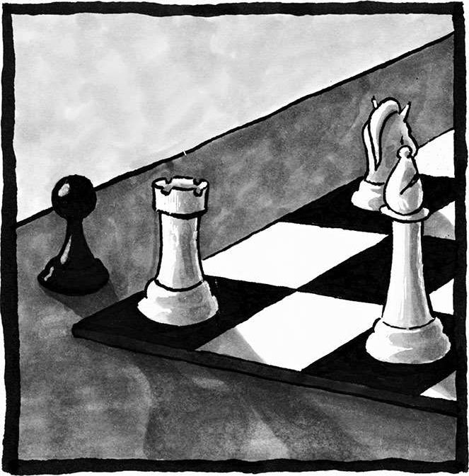
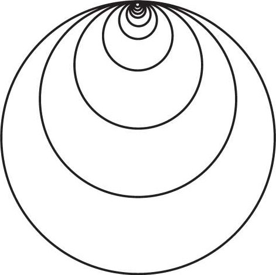
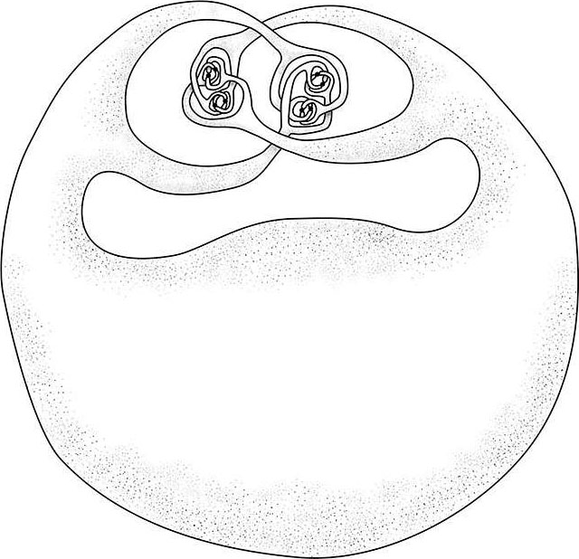

11 自由
任何教师都能把一个孩子领进课堂，但并非每一名教师都能让他学到东西。无论这个孩子是忙是闲，想要让他学习知识，都必须让他意识到学习的主动权掌握在他自己手里。只有见证过胜利的曙光，品味过失败的苦涩，他才能下定决心，将枯燥与乏味视为必不可少的磨砺，日复一日地埋头苦读，为蜕茧成蝶的那一瞬间不懈努力。
——海伦·凯勒
（Helen Keller）1
为了得到自由，我们必须付出很多东西。自由伴随着责任。
——埃莉诺·罗斯福
（Eleanor Roosevelt）2
我觉得接下来这个故事很切合本章的主题。这周六早上，我参加了一项给孩子们读书的公益活动。面对眼前这些来自洛杉矶某个贫困社区的拉丁裔和非洲裔儿童，看着他们热切的目光，我决定挑一本轻松活泼的图画故事书，给他们讲一讲海边的故事。我本以为他们肯定会喜欢的，可是声情并茂地读了几页之后，我发现我的这份热情并没有传递给孩子们。
于是我停了下来，问道：“你们之前谁去过海滩？”
令我感到惊讶的是，尽管这里离海边只有 15 英里，8 个孩子当中只有一个孩子举起了手。去海边玩难道不是每个加州人都会做的事情吗？

仔细想了想我才意识到，对低收入社区的孩子来说，父母为了维持生计通常要打好几份工，可能根本没有时间，也没有充裕的预算开车带着家人到海边玩。后来我的一位非洲裔美国朋友听说了这件事，他跟我解释说，受吉姆·克劳种族隔离法的影响，非洲裔群体被系统性地排斥在了海滩和泳池之外。这种现象不仅存在于南方，整个美国都是这样，当然也包括洛杉矶。我之前完全没有意识到这一问题。
唉，受历史、文化、经济等关键因素的制约，这些孩子很难去海滩玩耍，我之前怎么就忽视了这一点呢？这件事使我开始反思，我之前的所作所为到底能不能成功激励学生们去学习数学？他们的生活背景是不是也很重要？我是不是忽视了这些问题？哪些经历改变了他们的人生轨迹？哪些经历正在对他们造成重大影响？这些经历会不会在学习数学时给他们带来阻碍，让他们少了很多机会？反过来说，这些经历会不会给他们带来某些得天独厚的学习优势？数学领域会不会也像海滩一样，虽然挂着“面向所有人开放”的告示牌，但实际上还是有所限制？
就我而言，海滩就成了各种自由的隐喻，映射到数学之上就是：有些人被赋予了自由，有些人则被剥夺了自由。既然每个海滩都应该广迎八方客，那么每个数学领域也应该向所有人敞开大门，让大家都能拥有我们接下来将要提到的那些自由。对那些有幸以恰当的方式体验过数学的人而言，这些自由本身就是数学魅力的一部分。相反，扼杀这些自由会造成恐惧和焦虑，让大家失去学习数学的勇气。
自由是人类的基本渴求。它既是载入史册的人权运动的中心思想，也是人类繁荣的标志。我们需要宏观意义上的自由——富兰克林·罗斯福总统曾经说过，所有人都应该享受这四种自由：言论自由、宗教自由、免于贫困的自由、免于恐惧的自由。其实除此之外，我们也需要各种微观但同样重要的自由，比如时间上的自由、抉择中的自由。
下面我会着重分析一下数学领域中五种至关重要的自由：知识的自由、探索的自由、理解的自由、想象的自由、被他人接纳的自由。作为数学探索者，你应该知道它们的存在，然后去努力争取，同时愿意帮助自己身边的每一个人实现这些自由。
知识的自由的重要性容易受到低估，因为倘若你拥有这种自由，你只会觉得理所应当，但如果没有这种自由，你也不会意识到缺少了什么。假如你想要体验海滩上的自由，那么你必须对它的情况有所了解，知道海滩上有哪些娱乐方式，知道该如何游泳、冲浪、潜水、野餐、晒太阳、打沙滩排球等等。对任何一个去过海滩的人来说，这些都是显而易见的东西。可是，如果你和那些孩子一样，对海滩一无所知，你就不会知道海滩上有怎样的快乐在等待着你。
在数学世界，知识的自由也是一种最基本的自由。如果你只知道一种解题方法，那么你在处理问题时就会受到限制，因为对某些特定问题来说该方法可能并不适用。如果你掌握了多种解题方法，你就可以自由地挑选那些最简单、最具启发性的方案。数学可以让你在解决问题时找到更多策略。
数学家阿瑟·本杰明（Art Benjamin）被称为“人形计算器”——他可以凭借心算完成五位数的乘法。尽管有着如此令人惊艳的本事，但他认为数学的乐趣并不在于计算，而在于尝试用不同方案简化计算，从中找到最便捷的算法。[1]虽然我没有和他一样优秀的计算能力，但我在计算时也会使用一些类似的技巧。比如，对于 33×27 的心算，我可以想到四种不同的算法。
首先，我可以采用“标准”算法：先算 30×27，再算 3×27，最后把结果加到一起。具体过程就是（30×27）+（3×27）= 810 + 81=891。我觉得这些中间步骤对心算来说有些过于烦琐。
其次，我可以把 27 拆分为 3×9，先计算 33×3，再用结果乘以9。具体过程为（33×3）×9 = （100×9）-（1×9）= 900 - 9 = 891。这种算法看起来比标准算法简单。
再次，我可以把 33 拆分为 3×11，先计算 27×3，再用结果乘以11，即 81×11。乘以 11 时有个小技巧，可以简化计算过程：把 81 拆成 8 和 1，再在其中插入二者之和（9），就能算出最终结果是 891。1最后，我可以利用代数中的一个恒等式：（x - y）（x + y）=x2− y2。由于 27 = 30 - 3，33 = 30 + 3，所以我们想得到的答案就是27×33 = 302- 32= 900 - 9 = 891。
若有人要我快速求出 33×27 的结果，我会看看背后的箭囊，挑一支最锋利的箭矢来解决这个问题。对我来说，上面的四种算法就是箭囊中全部的箭矢。知识的自由，可以帮助我们扩充箭囊的容量。
我之所以会想到知识的自由，其实是受到了克里斯托弗·杰克逊的启发。他曾对我说，所谓自由，指的就是“知道自己全部底牌，所有选项一目了然”的状态。他在狱中下棋时悟到了这一点。只要限制了你在棋盘上的选项，你的对手就可以控制你、支配你。正如克里斯所言：
如果有哪位技艺高超的棋手达到了知识自由的境界，那么无论在棋盘上的哪个位置，无论局面是领先还是落后，这位棋手都可以发挥出高超的水平。不知道手中有何选项的人，其实就像一位腹背受敌、左支右绌的棋手。就算你这边藏着柳暗花明的走法，但如果你不知道这种走法的存在，那它跟不存在没什么区别。这就好比某位棋手发现对手那边只剩下一个王，自己这边也只剩下两个象去对付他。由于不知道两个象可以将死对面的王，这位棋手被迫选择了和棋。可是，如果这位棋手接受过相关指导（受过教育），知道两个象也能将死对方，那么他遇到类似情况就可以直接赢下棋局。在我看来，教育最大的意义就在于它可以引领人们走进知识的殿堂，帮助大家找到属于自己的成功之路……
教育可以让我们“站在更高的角度看待问题”，给予我们超越自我的机会，使我们有能力去帮助他人，让大家在知识的照耀下共同进步，共同提高。
理解了“知识的自由”之后，我们便会明白，教育不仅对个人来说至关重要，它对全人类而言还有一层更重要的意义：引领大家不断进步，帮助人们实现蓬勃发展。
数学学习过程中应当存在的第二种基本自由，是探索的自由。就像在广阔的海滩上游玩一样，你可以看到漂亮的贝壳，听到悦耳的潮声，甚至可以去找一找埋在地下的宝藏，数学的学习也应该是一个探索的过程，只有这样才能调动起我们的创造力、想象力，让我们感受到数学的魅力。可惜的是，有些教育方式没能给大家提供这种自由。说到这里我想到了我的父母，在辅导我数学时，他们的教育方式存在巨大差异，母亲让我感受到了探索的乐趣，而父亲只会让我觉得学习是一种责任。
总之，他们都希望我从小就可以学习数学，所以在学龄前父亲就教我识数，练习算术。由于工作繁忙，他会给我准备一大堆加法算术题，好让我无心玩耍。作为一个听话的孩子，我遵从了父亲的安排，但我心里总觉得这件事没什么意思。“把这套题做一下，”他总是这样跟我说，“除非你全做对了，不然不许出去玩。”
父亲的这种教育方式，其实只是一种单向的信息传输。讲解一下解题技巧以后，就开始让我一个人练题，大部分时间里，我只是在按照他教给我的规则计算，完全弄不懂这些规则是什么意思。虽然我学会了利用“进位”来计算结果大于 10 的加法，可实际上我根本不知道自己在干什么。我不过是把规则背下来了而已。而且只有在我表现不错的时候，父亲才会给予表扬和奖励。如今，平心而论，我的父亲肯定算得上是一名好父亲，可从另一方面来说，他也的确像其他亚裔移民家长一样，迫使我在考试没拿到“优”的时候产生一种羞愧之心，不敢面对父母。这完全称不上自由。
和父亲相反，我的母亲采用了一种启发性极强的教育方式，她会引导我发现事物之间的联系。她会陪我一起做游戏，用游戏锻炼我的数字思维，培养我总结规律的能力。她还会坐在我的身旁，和我一起阅读与计算相关的图书。那些图书的启发性也很强，书里充满了令人惊奇的事物，让人读起来甘之如饴，总是能够令我联想到更多问题。比如我当时思考过这个问题：苏斯博士怎么会有 11 根手指？他甚至不是你想的那样，一手 5 根，一手 6 根，而是一手 4 根，一手 7 根！这些异想天开的设定，让我产生了更多的想象。在母亲的引导下，我体会到了探索的自由，感受到了询问的自由，我可以毫无顾忌地思考一些怪诞的问题，我甚至会因为天马行空的想法和问题受到母亲的表扬。
哪怕迈入了新的学习阶段，这种自由仍然是数学学习过程的核心内容。高中时期，我参加了一个由得克萨斯大学奥斯汀分校以招生为目的举办的讲座，主题是“无限”，演讲人是数学教授迈克尔·斯塔伯德（Michael Starbird）。他的演讲风格完全不同于我在高中校园里遇到过的任何一场演讲。他的互动性极强，还会不断地向观众提问——仿佛在邀请我们和他一起探索数学。我以前从没见过哪个演讲者能让一屋 300 多人全部聚精会神，乐在其中。这种互动方式实际上就是主动学习法（一种教育方式）的一个经典案例。演讲结束时，我不禁产生了这样的想法：哇哦，如果每门课程都能像这场讲座一样，那大学生活该多么有趣啊！
后来我顺理成章地进入了得克萨斯大学。由于学校准许我免修微积分，再加上我觉得自己数学“不错”，我干脆跳过了微积分，直接开始学习后续课程。很可惜，这门课程的风格相当传统——教授大多数情况下都是直来直去地讲课，没有什么互动，学生们只能枯燥地埋头做笔记。第一天上课时这位教授就聊起了和矩阵相关的内容，可我之前从来没见过这些东西，学校也没说必须学过矩阵才能选修这门课。（矩阵是一组数字，相关内容通常会安排在这门课程之后才学习。）紧接着他开始对矩阵求幂——他写下了自然常数e，然后在它的右上方列了一组数字。对我来说，这就像用牛油果刷牙，用钱包装猫一样，让人一头雾水。
我环顾四周，发现除我之外其他人好像都知道教授在算什么。我有点惊慌，但也不敢举手发问，因为其他人的表情都很镇定，教授也没让我们问问题。我只好一边看着各种奇怪的符号在黑板上飞来飞去（就像键盘上的符号锁定键坏了，屏幕上不断地蹦出一串又一串怪异字符一样），一边老老实实地做笔记，可事实上我根本不知道我写的是什么。这还只是第一天的遭遇。之后的整个学期，我一直都在努力地跟上大家，可我的进度总是落后两个星期，这就导致我的知识水平总是不够用，做作业和考试时经常会遇到不会解的问题，只能乱猜一气。我就像一只仓鼠，奔跑在速度由别人掌握的轮子上，总是害怕一不小心就会掉下去，在大学第一门数学课上就摔得鼻青脸肿。这完全称不上自由。
从上面这个故事中，我们还能看到数学学习中的第三种自由：理解的自由。这门课让我明白了一个道理，那就是如果你一直在假装自己已经理解了某些知识，那么那些你实际上并没有真正理解的知识将会永远困扰着你。你会发觉身旁所有人都知道自己在干什么，只有你像个冒牌货一样，根本没有资格和他们坐在一起。相反，真正的理解意味着你只需要耗费很少的脑细胞就可以记住那些公式和步骤，因为你明白它们的具体含义，知道它们的关联，可以把它们有机地结合在一起。虽然说好的数学教育应当提倡这种自由，而不是抑制这种自由，但对个人学习者来说，即便我们所处的教育环境没有提倡这种自由，我们也要努力加深自己对知识的理解。这也是学习数学时较为困难的地方之一。
第一门课程结束之后，我一直在考虑自己是不是应该放弃数学专业。不过深思熟虑之后，我决定再给自己一次机会。我又选了一门数学课程，这次遇到的教授风格很不一样，他更喜欢互动，也更加平易近人，成功帮我找回了学习的自信。之后，第二学年，我选修了斯塔伯德教授的拓扑学课程——一门研究如何拉伸东西的学科。更准确地来说，拓扑学主要研究的是在连续形变的过程中，几何对象身上有哪些不随形变而变化的属性。出于这个原因，拓扑学有时也被称为“橡皮膜上的几何学”。也就是说，在这门课程当中，图像的绘制尤为重要，你几乎遇不到任何数字！
令我喜出望外的是，斯塔伯德教授采用了“探究式学习”的教学方法。课堂上没有任何枯燥的说教，相反，他给我们列出了一串定理，然后向我们提出了挑战，看看谁能率先给出准确的证明。在他的精心引导下，我们经历了一次又一次的互动式学习，最终学会了如何表达自己的想法，如何让自己的想法通过同行们的严格审阅，然后得到他们的认可。教授的这种教学方式还有一个优点，那就是他在无形当中激发了百花齐放的课堂文化。他为大家创造了一个良好的学习环境，鼓励大家积极提问，让大家敢于提出不同寻常的想法。他让学生们体验到了探索的自由。
事物之间的联系是探索过程的核心内容。这种学习环境让我们意识到，我们可以直接告诉大家“我的证明过程有误”而不必感到羞愧，也不用担心被别人批评。事实上，出错是一件值得高兴的事，因为我们可以从中看出一些值得回味的细节，然后展开更深层次的分析。
我看到在某些更为传统的课堂上，教授们也在尝试主动学习法，也在试图为学生们营造类似的学习环境。在这样的课堂上，每天都会像苏斯博士的诗歌一样美妙，每次学习都是一种惊喜，每个知识都蕴含着神奇，每个人都会因为奇思妙想而得到他人的赞美与鼓励。
数学中的第四种自由，是想象的自由。如果说探索指的是发掘已知事物，那么想象指的就是构建全新思想（至少对你来说是新的）。任何一个在海滩上堆砌过城堡的孩子都知道，一桶沙子具有无穷的潜力。格奥尔格·康托尔于 19 世纪末为集合论做出了开创性的贡献，首次清晰地为人类描述了“无穷”的本质。这位大师也表达过类似的观点：“数学的本质在于它的自由。”2他的意思是，和其他自然学科不同，数学所研究的各种概念与实物之间不一定存在紧密的联系。因此，数学家在做科研时不会像其他领域的科学家一样受到那么多限制。数学探索者可以充分发挥其想象力，在数学领域随心所欲地建造自己想要的城堡。
我在拓扑学课程中学会了如何运用自己的想象力。正如我刚才提到的那样，拓扑学研究的主要是在连续形变的过程中，几何对象那些不随形变而产生变化的属性。如果我没有在物体上增添任何“洞”，也没有减少任何“洞”，那么无论我如何改变该物体的形态，都不会改变它的拓扑结构。所以从拓扑结构的角度来看，足球和篮球是一种东西，因为二者可以通过形变互换身份。不过足球和甜甜圈却是两种东西，因为你无法在不打洞的情况下把足球捏成甜甜圈。
拓扑学是一门相当好玩的学科，因为我们可以把东西剪成两半，把东西粘在一起，用奇怪的方式拉扯，然后创造出任何我们喜欢的形状。我们经常会研究这些形状内部的某些问题，所以这些形状也被称为拓扑空间。各种奇奇怪怪的拓扑空间足以令拓扑爱好者废寝忘食，更不用说那些像“是否存在某些具有特定‘病态’的物体？”一样天马行空的问题了。（没错，就像医学一样，数学中也会使用‘病态’这个词来形容奇怪或反常的事物。）每次遇到这种问题，拓扑学家们就会开动脑筋，构思出一个符合条件的例子。例如著名的和田湖（Lakes of Wada）：我们可以在同一张纸上画出三个边界完全相同的区域（或者说湖泊）——这意味着任何一个湖泊的边界上的任何一点，都必须同时处于三个湖泊的边界之上。“和田湖”这个名字是为了纪念它的创作者、数学家和田健雄（Takeo Wada）。再例如夏威夷耳环（Hawaiian earring），这是一个由无穷多个越来越小的圆环嵌套而成的华丽结构，所有圆环相交于同一点之上。3
这张分形图包含三个区域，分别为浅色“湖”、中色“湖”和深色“湖”，三个湖共享同一边界。与原版和田湖的不同之处在于，每个湖都包含了多个彼此分离的流域。
对于病态（当然是指数学中的病态）的空间结构，还可以举出另外一个相当著名的例子，那就是亚历山大带角球体（Alexander hornedsphere）。这里的球体指的是一个气泡形状的球面。一个完美圆球的球面具有“单连通”的性质。单连通大体上指的是这样一种概念：如果你绕着该球面围了一根绳子，然后把两端系在一起形成一个圆环，那么无论你采用什么样的系法，你都不能让这个圆环卡在球面之上——我们总是可以轻而易举地把这个圆环扯下来，让它和球面分开。（甜甜圈和它形成了鲜明的对比，因为甜甜圈的外表面并不是单连通的：如果将绳子的一头穿过甜甜圈的孔，然后再绕出来把两端系在一起，你就无法将它扯下，让它和甜甜圈分开。）1924 年，詹姆斯·韦德尔·亚历山大（J. W. Alexander）在设想某个带角的球时提出了这个著名的问题，该问题可以这样描述：是否存在某种形变方式，可以在气泡上任意两点都不发生接触的情况下，让气泡变成一个特殊的形状，使得气泡的外表面成为一个非单连通的区域？

夏威夷耳环
起初亚历山大认为，无论怎样形变，气泡的外表面都必然是单连通的。4不过，后来他构造出了一个特殊的气泡，它的外表面并不是单连通区域！他想象的构造方法如下（这并非他构造出的特殊气泡，不过二者在拓扑学上是等价的）：取一个气泡，在它的表面挤出两个“犄角”。然后在每个犄角上各捏出一对小犄角，让两对小犄角保持在马上就要互相锁在一起但实际上还留有缝隙的状态（就像食指和大拇指即将接触在一起时的形状）。随后在这两个缝隙中重复上述动作，捏出四对小小犄角——每两对小小犄角都处于即将互相锁住，但仍留有缝隙的状态。如此反复，你就可以在极限状态下得到一个亚历山大带角球体。
由于我们可以无限制地捏出更多的新犄角，所以一个围绕在初始犄角底部的绳圈无法彻底从这个带角球体上扯下来。不过，如果“捏犄角”这一过程在某个阶段停了下来，没有达到极限状态，那么该绳圈仍旧可以被轻松扯下。想要正确理解这个惊人的构造，我们不仅需要充分调动想象力，还要想办法证明在极限状态下，这个带角球体仍旧算是一个球体。你可以在脑海中不断地把下面这张图放大，思考一下在连续变化的过程中这些犄角的分形特性，然后你就会意识到，无论放大到什么程度，你看到的画面都不会产生什么变化。

亚历山大带角球体
有了想象的自由，数学就会变得像仙境一样梦幻。只需许个愿，你的梦想就会在一片闪闪的金光中变成现实。
如果在数学的每个阶段我们都能充分发挥自己的想象力，那学习该会变得多么有趣啊！我们甚至不必等到自己学习高等数学的那一天，因为仅凭算术知识我们也可以感受到想象的魅力，比如我们可以尝试构建一些具有奇特性质的数字。你的出生日期包含 8 个数字，能同时被这 8 个数字整除的最小数字是多少？你能找出 10 个连续的自然数，让它们全部是合数吗？此外，在几何学当中，我们可以设计各种自己喜欢的图案，并探索它们的几何性质，比如你可以研究一下这些图案中存在哪些对称性。在统计学当中，我们可以找一个数据集，然后构思一些独特的方式将其可视化，看看哪种方式可以更好地展现出数据集的关键特性。如果你正在学习一本枯燥的数学教材，那么你可以试着更改书里的题目，从而提高自己的想象力。如此一来，我们就可以切身体验到想象的自由。
不幸的是，倘若我们没有获得最后这种自由——被他人接纳的自由，那我们也很难体验到前面提到的四种自由。然而，最后这种自由恰恰是许多数学团体所缺少的东西。
前面我们提到，由于某些历史因素，海滩曾具有一定的排他性，直到今天很多人仍然无法自由地享受海滩风光。我们可以设想一下这种场景：虽然现在海滩上已经没有任何告示可以阻止你进入其中，但你仍然没什么机会去海滩玩，因为你的父母根本没有时间和精力带你过去。虽然没人赶你出去，但是会有很多人对你侧目而视，所有人都在怀疑你是否属于这片海滩。有些人会把你当成海滩浴房的工作人员，跟你说卫生间的纸巾用完了，让你拿点新的过去。还有些人会在你经过时移开自己的视线，然后紧紧抱住自己的孩子。人们会单独为你制定一些看起来相当不讲道理的规则，警告你不可以在野餐时吃这种食物，不可以在海滩上玩那种游戏。你只好走向了沙滩排球区域，看看能不能和陌生人组队打一场球赛，可是没有任何一个人向你发出邀请，因为他们觉得你不可能会打排球，也绝不会愿意花时间学习打球。这片海滩明面上对你保持开放，可实际上没有任何人愿意接纳你。
可悲的是，有很多数学团体跟我描述的一模一样。尽管我们总是把“多样性”这个词挂在嘴边，但实际上暗地里总是会做出各种排他行为。我们可以设想一下下面这些例子：
你的名字叫作亚历珊德拉（女性的名字），你很早就发现，从小学开始，只要数学教材上出现示例，就一定会采用白人男性的名字。在中学阶段，尽管你在解题时经常能想到一些新颖的方法，但你的老师从未对此产生过任何兴趣，因为她只关心自己已经掌握的那些解题方法。虽然你还有一位男性数学教师，可他从不和女生有任何目光上的接触。
后来你上了大学，选修了一门高等数学课程。虽然你只是遇到了一些小挫折，可教授还是建议你放弃这门课，去选一些低阶的课程。再后来你成了学校运动队的一员，每天下午都必须参加严格的训练，可是你的教授只会在下午待客。很多教授会在证明过程中使用“显而易见”“此处略过”之类的词，可这些词常常会让你怀疑自己是不是有点笨，因为对你来说那些结论完全称不上“显而易见”，省略过程之后更是让你一头雾水。更让人痛苦的是，教授还会用“像你这样的学生，在数学上的表现通常来说都不太好”这样的话来评价你。又过了一段时间，你得知学校即将举办一场数学竞赛，举办方邀请所有数学系的学生去参加赛前集训，只有你没有收到通知。在你的文化当中，所有人都很注重集体意识，擅长讲故事的人往往能够得到他人的尊重。可是，那些数学教授每次留作业的时候都要求大家必须独自完成，讲课时也从来不会提到任何文化知识和历史背景，搞得数学好像完全独立于人类文明而存在似的。
之后你进入了研究生院，继续攻读数学，可是你发现身旁几乎没有别的女性，也没有和你一样的拉丁裔学生，教职人员里面当然也见不到拉丁女性的身影。没人知道你的名字该怎么念，于是大家在没有征得你同意的情况下，就把你的名字简化成了“亚历克斯”（男性的名字）。数学系的学生休息室里面没有任何艺术作品，也没有任何植物，甚至连颜色都没几种。整个环境让人感到枯燥呆板，你根本不想多待一秒。同学们的竞争意识都很强，只要别人出错，他们马上就会以不太友善的方式指出来。你的辅导员只关心和工作相关的内容，哪怕你正在向他诉苦，跟他说一边照顾孩子一边上学实在是太难了，他也不怎么上心。没错，你已经决定好在研究生阶段组建一个家庭，可是学校政务处在处理这种事情时总是缺乏灵活性。
最终你成为一名数学家，在得知自己成功被一所重视教学的大学聘用的那一刻感到欣喜若狂。可是你那些在研究型大学工作的朋友总会面带遗憾地问你：“你在那里真的开心吗？”参加会议时，由于身材娇小，皮肤偏黑，大家常常会把你当成酒店为会议安排的服务员。当你和他人合作发表论文时，大家总是认为另一个作者做出了更多的贡献，导致你在独自发表论文时老是感觉有莫大的压力。尽管你深爱着数学给你带来的一切，可有的时候你也会觉得自己的付出好像不太值得。
综上可见，亚历珊德拉的生活让人感到了无生趣，她的遭遇让人感到残酷压抑，尽管给她带来这些遭遇的人可能原本抱有极大的善意，根本不知道自己的所作所为会让亚历珊德拉遭受痛苦。总的来说，他们没有正确使用自己手中的力量，而是把它变成了一种强制力。亚历珊德拉没能体会到被他人接纳的自由。你完全想不通她到底是如何坚持到现在的。
事实上，接纳他人不仅意味着你要允许别人和你共处，还意味着你要主动欢迎别人走进你的领域——告诉别人“你是我们的一分子”，然后用实际行动遵守自己的诺言；意味着你要对他人保持较高的期望，尽己所能地帮助他人。
你对学生的期望会影响他们在课堂上的表现。大量研究表明，“期望效应”真实存在，教师对学生的期望可以影响学生的成绩。最著名的例子就是 1966 年的“罗森塔尔-雅各布森”实验。在这项实验中，学生们接受了一次虚假的能力测试，教师们会随机挑选一些学生作为“好苗子”，然后跟他们说，所有老师都对他们抱有极高的期望，觉得他们将来“必能有所作为”。事实证明，在接下来的一个学期，这些学生的表现真的比其他同学更好。5
这种期望实际上是一种无形的绑架，学生和教师全部成了俘虏。教师们思维受限，因为他们想象不到学生到底有怎样的潜力；学生们发展受限，因为他们总是被他人灌输思想，被他人安排命运。这些学生根本没有“得到自由”的自由。想要让学生感受到被他人接纳的自由，我们需要这样告诉他们：“我相信你会成功的，我会帮助你达成梦想。”
在《打破教学边界》（Teaching to Transgress）一书中，贝尔·胡克斯（bell hooks）[2]讲述了美国种族隔离时代，她在某所全黑人高中读书时的所见所闻，并赞扬了那些把“充分挖掘学生潜能”当作自身使命的教师：
为了完成这一使命，我的老师们会确保他们“掌握”了我们的情况。他们知道我们的家长是谁，知道我们的经济状况，知道我们在哪里做礼拜，知道我们的家庭环境，还知道父母在家里是怎样对待我们的……
那时，上学是一种纯粹的快乐。作为一名学生我感到很开心，我热爱学习……在各种思想的哺育下蜕变成长，是一种极致的享受……我可以……学习各种思想，重新塑造自我。6
从这些文字中你可以看出，那些教师是如何让学生感受到“被他人接纳的自由”的。他们会关心所有和学生相关的东西，而不是只关心学生的学习成绩。学生们的教育和他们所处的环境密切相关。在感受到被他人接纳的自由之后，贝尔·胡克斯自然而然地体验到了更多的自由：探索思想的自由，以及塑造一个全新自我的自由。
后来学校被合并了，她不得不换了一所学校就读，从此以后她的生活发生了明显的变化：
突然之间，好像只有信息才算是知识，一个人的生活经历、言谈举止和知识再也没有半点关系……我们很快就意识到，学校只希望我们能够服从命令，他们根本不关心我们是否有一颗热爱学习的心。……
对黑人孩子来说，教育和自由完全处于一种脱钩的状态。看清这一点之后，我对校园生活的那份热爱彻底熄灭了。7
虽然海滩现在对她敞开了大门，可是那里的人既不欢迎她，也不接纳她，她既没有找到归属感，也没有感受到他人的热情。贝尔·胡克斯逐渐被各种期望所奴役，总是感觉必须要想方设法证明自己。可是她不敢和旁人诉说，因为她怕说出去以后别人会觉得她简直是不自量力。教育突然之间和统治变成了同义词。没有被他人接纳的自由，她就丧失了其他所有自由。
这里我要强调一下，我绝不是在提倡种族隔离。我的意思是，真正的接纳必然会涉及真正的自由，尤其是在这种自由曾被人无情剥夺过的情况下。
数学中的这些自由可以帮助我们养成很多优秀品格。具体来说，知识的自由使我们变得足智多谋，让我们可以根据问题的具体情况选择恰当的工具和方法。探索的自由使我们在集体讨论时敢于大声发言，积极提问，让我们在为探索发现而欢呼雀跃时可以保持独立思考，让我们能够正确对待自己的错误或失误，善于从失败之中挖掘线索，看到全新的调查方向，找到恰当的解题思路，从而把各种阻碍和挫折转变为成功之路上的垫脚石。理解的自由可以帮助我们正确掌握各种概念的含义，搭建起可以互相印证的知识体系，深刻认识到知识的价值，让自己在任何情况下都可以把知识当作信仰。最后，想象的自由可以为我们插上翅膀，让我们在思维的天空中任意翱翔，充分感受创造力的美好，从各种奇思妙想当中获取无穷的快乐。
在研究生阶段，每当我遇到困难，每当我因与他人的差距而感到气馁、因教授对我能力的质疑而感到难过时，都是这些优秀品格在支撑着我，帮助我渡过难关。独立思考一番之后，我认为眼前这些困难对一个新手来说是完全正常的。遇到不懂的问题时，心中的那份勇气令我敢于主动提问。我能体验到数学中各种创造性思维带给人的乐趣。此外，我一直都对知识抱有坚定的信念，这种信念给了我强大的信心，让我相信只要认真学习，不懈努力，我一定能追上他人的步伐。用海伦·凯勒的话来说就是，数学中的各种自由令我下定决心，日复一日地埋头苦读，为蜕茧成蝶的那一瞬间不懈努力。
对数学来说，自由是学习、研究过程中必不可少的一部分，所以我们应当好好想一想，自由到底意味着什么。我知道，有些人觉得自由就是“不受约束”，好像有了自由就可以“为所欲为”。可我坚信，真正的自由绝非如此。
只有付出了汗水，承担了责任，赢得了他人的支持，你才能得到自由。想想你的老师吧，是他们为你付出了大量的时间和精力，令你有了自由提问的机会，向你展现了探索海滩的方式，让你可以亲手建造自己幻想中的城堡。想想你的父母吧，是他们不遗余力地为你创造了必要的学习环境，让你有机会一睹海滩的真容，帮你树立起了不畏艰险勇往直前的决心。想想你的朋友吧，是他们敞开胸怀接纳了你，尽己所能地为你提供支持与关怀，帮助你成为大家庭的一分子。最后，请你想一想自己付出的那些努力吧，正是因为你告诫自己一定要在这片广袤无垠、波澜壮阔的领域中闯出一番事业，并以心血和汗水践行了自己的诺言，你才得以体验到成功的自由。若非如此，你永远也不会知道那片海滩上到底藏着怎样迷人的风景。
像我们这些已经体验过数学当中各种自由的人，决不能独自享受。我们要承担起相应的责任，主动接纳他人，让他们也能体验到这些自由带来的快乐。
------多项式的次数------
和本书中的其他谜题相比，这次的谜题似乎需要更多的背景知识。不过我相信，只要你能坚持下去找到答案，就一定可以体验到那种恍然大悟的快感。
言归正传，多项式是一种代数表达式，例如x3 + 2x + 7。将具体数值代入x以后，你可以算出它的结果。比如说令x = -1，那么多项式就变成了（-1）3 + 2×（-1）+ 7，其结果等于 4。另外我们还要说一下，次数指的是多项式中最大的指数。对该多项式来说，它的次数为3。此外，系数指的是多项式中每一个单项式中的数字因数，对该多项式来说，x3 的系数为 1，x的系数为 2，数字 7 被称为常数项。
我们的问题是这样的：
假设现在有一个多项式，已知它的系数全部为自然数，但是不清楚它的次数，你的任务是找出这个多项式的本来面貌。为此，你可以向我问一些问题，但问题仅限于下面这种形式（下文中的k指的是某个具体数字）：
“当x=k时，多项式的结果等于多少？”
为了确定这个多项式，你最少需要问几次问题？
我非常喜欢这个问题，因为乍一看它好像少给了很多必要的条件。不过这样一来你也拥有了更多的自由，可以随便问我任何问题，只要符合规定就行。从山姆·范德维尔德（Sam Vandervelde）的口中，我第一次听说了这个有趣的问题，对此我表示十分感谢。
弗朗西斯先生，您好：
在监狱下调了我的威胁等级之后，我被转移了两次地方。在上一所中转机构中，我遇到了一些志同道合的人，大家相处得非常愉快，我从他们身上学到了很多东西。虽然我从 19 岁开始就过上了牢狱生活，如今 31 岁了，可事实上我仍然算是个年轻人，世界上还有很多东西等着我去学。一方面，地球人口足足有 71 亿，这些人当中必然存在很多共性；可另一方面，从细节上来看，这些共性当中也存在着无数的差异，因为每个人都有自己的独到之处。以我自己为例，迄今为止我还没有找到任何一个“完全和我在同一个频道上”的人。不过我已经意识到，就算大家无法完全调到同一频道，我们还是要对其他人保持开放态度，为他人播种，被他人灌溉，因为每个人身上都有一些值得我们学习的地方。不过我的情况特殊，大多数时间遇不到几个可以说话的人。之前在肯塔基州的时候我交了两个朋友，在刚刚离开的那个机构也遇到了三位相谈甚欢的人，可惜每次相处的时光都不长，总是意犹未尽就被迫分开。
克里斯
2018 年 1 月 28 日
[1]注意，在利用这种便捷算法的时候，如果“二者之和”大于等于 10，请记得在前面那个数字上“进一位”。以 75×11 为例，7+5=12, 此时我们把数字 12 个位数上的 2 放在 7 和 5 的中间，得出结果 725，然后把数字 12 十位数上的 1 加到 7 的身上，也就是前面所说的进一位，由此得到结果 825。学了代数以后，你就会明白这种便捷算法的原理：任意两位数乘以 11，可以写作（10a + b）×11 = 110a + 11b=100a + 10（a + b）+ b，由此可以看出，最终结果就是把个位数与十位数上的数字相加，然后放到二者中间。
[2] 贝尔·胡克斯（1952——2021），本名格洛丽亚·简·沃特金斯（Gloria Jean Watkins），美国作家，女权主义者，社会活动家。她以她的曾祖母的名字贝尔·胡克斯（Bell Blair Hooks）为笔名，并且写名字时不按通常的规则大写第一个字母，目的之一是表明她与先辈女性的本质联系，目的之二是想把注意力集中在她的作品上，而不是她自己身上。——编者注